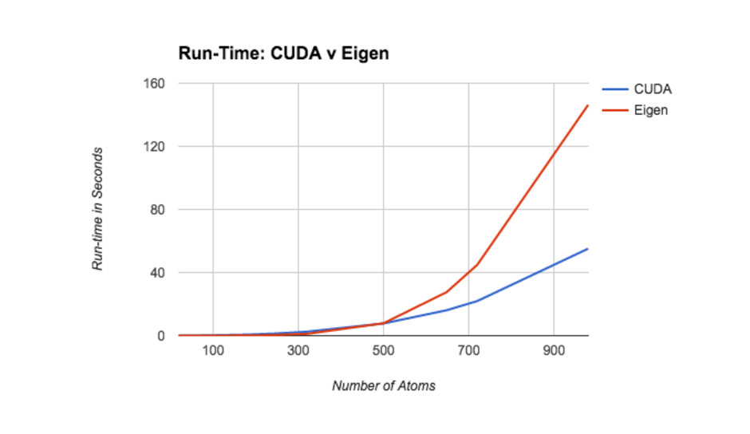
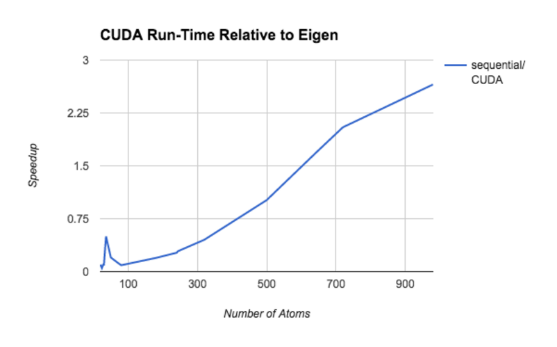
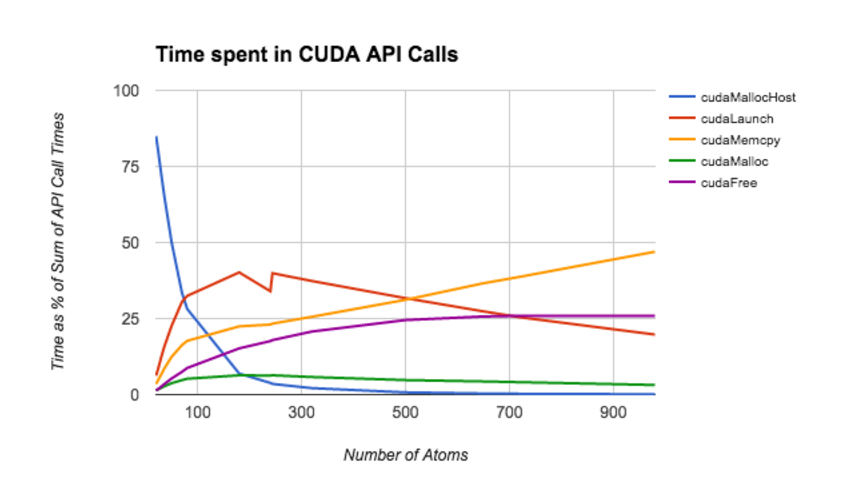

Final Report
Summary
We implemented a parallel perfect matching algorithm for Chemical Bond Assignment on the CPU and in CUDA on the GPU and compared the performance of the two implementations.
Background
Our problem was of bond perception, a common task in computational Chemistry. This came down to implementing a parallel perfect matching algorithm for a connected undirected graph. The existing libraries that do bond perception are exponential in runtime and not implemented on parallel architectures. The current sequential perfect matching algorithms are around O(V2.5) work and the parallel algorithms are in RNC. Our algorithm is in O(N*logk(N)), where k is a constant.
Our Basic Algorithm:
- Perceive single bonds using simple distance formula on input atoms.
- Assign double bonds via a perfect matching on the graph induced by the single bonds.
- Perfect matching guaranteed by structure of molecule.
On a high level, the algorithm finds edges to include in the matching by leveraging properties of the Tutte Matrix. It deletes two rows and two columns from the Tutte matrix at every iteration and puts that pair of vertices as an edge in the matching. It keeps doing so until the matrix is completely used and all vertices are paired with exactly one other vertex. The original algorithm computes the determinant to check if a perfect matching exists. We don’t do so because we are guaranteed that at least one exists.
Our problem to figure out the edges to delete translated into solving a system of linear equations. We used LU decomposition with partial pivoting to solve the equation PA = LU. We then used forward and back solving to solve Ly=Pb and then solved Ux=y. Once we solved these equations, we used the results in the Rabin Vazirani algorithm and decided which edges to remove based on certain constraints in RV algorithm.
We represented our input graph(molecule structure) as an adjacency matrix. Our output was a representation of the edges in the matching which translated to assignment of single and double bonds to our atoms. We used a vector of vectors representation for our adjacency matrix.
This problem is highly parallelizable in nature as a majority of the computation on each iteration of the algorithm is independent of each other and is not arithmetically intensive. We tried openMp and CUDA, and the results are below. A huge bottleneck for performance was the amount of memory needed. Other than that, finding smart access patterns to do operations on matrix was also something that had a lot of scope for giving good speedup. The only dependencies are between iterations choosing which edge to put in the final matching. Each of those iterations is highly parallelizable.
Approach
Rabin Vazirani Implementation
The original Rabin Vazirani (RV) algorithm requires computing a matrix inverse at each iteration. However, performing a matrix inversion for large matrices is very numerically unstable. Each iteration RV only requires the first row or column of A-1. Thus, instead of computing A-1 directly, we solve the system Ax=b where b=<1,0,0, ... ,0>. This makes x the first column of A-1.
Once we compute x, we perform a simple sequential loop to find the edge (u,v) that will be added to the matching. We now have to delete the rows and columns corresponding to u,v from A. The original algorithm does not specify a mechanism for doing this, so we chose to implement an in-place deletion mechanism, discussed in the section below.
Matrix Deletion
Our implementation deletes rows in place by copying over the current values of A with the appropriate post-deletion values. To avoid read/write contention for the same cells, we create the rows of the new matrix one at a time. Since we're always deleting the first row and column, each current row of A will be shift up. When shifting a row, we run a kernel that shifts the entire row up at once.
There are certainly more time-effieicnt ways to perform this step. For example, we could create an empty matrix M, store the new value in M, and delete A. In practice however, we found that minimizing memory usage resulted in better performance than minimizing the algorithm's total work on this step.
LU Decomposition
We use Gaussian Elimination with partial pivoting to construct the LU matrix. To improve performance, we perform the LU factorization in place on a copy of the matrix A. The sequential nature of Gaussian Elimination requires us to compute the previous (k-1) columns of L/U before we can compute the kth column. However, the computation of a particular column is highly parallelizable.
In particular, computing a column requires the following kernels: a single O(log(N)) reduce to find the next pivot, an O(1) map to swap to pivor row and the current row, an O(1) map to compute the values of L matrix, and an O(1) map to compute values of the U matrix. Each of these maps consist of two lookups and an arithmetic operation. As a rseult of this very low arithmetic intensity, column computation tends to be very fast. The main bottleneck in performance is the fact that the kernels can only be executed in one order. Performance analysis shows that program spends a non-trivial amount of time at barriers.
Forward/Backward Solving
We use a naive sequential implementation of forward/backward substitution. We planned on parallelizing the inner for-loops, i.e. the loops that iterate through the previous values of y (x) to compute the next value. However, due to time constraints we were unable to finish this. Performance profiling suggests that algorithm spends a non-trivial amount of time on the forward/backward step, especially on larger matrices. Given more time, we would definitely have attempted to implement a more parallel forward/backward solution.
Architecture
We chose to implement our algorithm for GPUs. We used the CUDA and thrust libraries in our implementation. The low arithmetic intensity and high memory usage of our algorithm made GPUs a very attractive choice.
Prior to settling on GPUs, we considering implementing the algorithm in OpenMP. We made a simple OpenMP version of our sequential implementation and ran it on the six-core hyperthreaded GHC 26. However, the implementation yielded same or poorer performance than our sequential implementation on our test set. We intended to run the implementation on the 61-core Xeon Phi architecture, but were unable to do so due to time-constraints. Given more time, we would've optimized our OpenMP implementation and tested it on multiple multi-core machines.
Optimizations
When profiling our code, we discovered that the program spends a significant amount of it's run-time allocating memory and copying memory from host to device (or vice-versa). As shown in CUDA API call portion of the results section, cudaMemcpy and cudaFree occupy the most processor time on medium and large matrices.
To improve performance, we minized the program's memory usage by implementing algorithms in-place, re-using temporary variables, and minimizing copying (in both directions). We also condensed variable representations whenever possible. As an example, rather than allocate space for a permutation matrix P, a vector b, and the product of the two Pb, we replaced all three variables with a single vector for Pb. Using our fore-knowledge of the vector b, we were able to compute Pb during the course of the LU decomposition without the need to use or store P or b.
We also took care to remove synchronization barriers wherever possible. Our original code had multiple unecessary cudaDeviceSynchronize() calls. Our performance sped up dramatically upon removal of these calls.
Results
Test Machine and Test Set
We performed all tests on the GHC 26 machine which sports an NVIDIA GTX 480 GPU and compute capability 2.0. Our test set was a combination of carbon rings and tubes of various sizes ranging from 20 to 988 atoms.
Sequential Benckmark
Our sequential benchmark was our C++ implementation of the rabin vazirani algorithm using the LU decomposition technique to solve for the first column of A-1. We used the Eigen linear algebra library in our implementation. We used Eigen data types for our variables and Eigen library functions to copy and initialize variables. Aside from those functions however, the sequential implementation was entirely hand-written.
Run-Time Comparison
The following plot illustrates the run-time of both implementations across the entire test set. While the two implementations report similar initial run-times, the CUDA version scales significnatly better as the number of atoms increases. We have strong reason to believe this trend holds at even large molecule sizes. We originally planned to include a 1800 atom molecule in our test set. However, while the CUDA implementation took 5 minutes to procesx the molecule, the sequential version failed to terminate after 15 minutes.
The following plot the f(x) = (sequential run time on x)/(CUDA run time on x).
The follow graph illustratates the time spent on each CUDA API call as a function of the size of the input molecule. During performance profiling, we discovered that CUDA API calls dominate the running time of the algorithm for molecules with 200 or more atoms.
It is interesting to note that cudaMemcpy consumes the majority of the API call time on the largest graphs. We use cudaMemcpy rather sparingly, so we were quite surprised that it still scaled so dramatically with the number of atoms. We also found it intersting that cudaFree consumed a much larger portion of the run-time than cudaMalloc and cudaMallocHost combined on nearly all inputs. This suggests that our implementation may have hidden negative consequences with regard to freeing memory that we are not aware of.
Demo
We built a webapp to demo our project. The code for the webapp can be found here.References
- A Parallel Algorithm for Calculation of Large Determinants with High Accuracy for GPUs and MPI clusters
- Rabin Vazirani
- Parallel Forward and Back Substitution for Efficient Power Grid Simulation
- Gaussian Elimination and LU Factorization
List of work by each student
Equal work was performed by both project members.